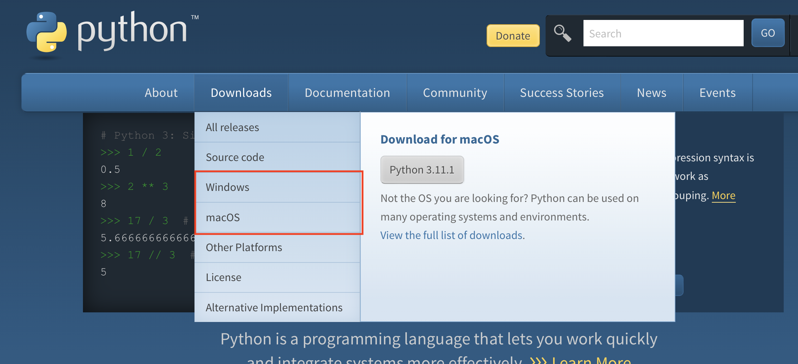
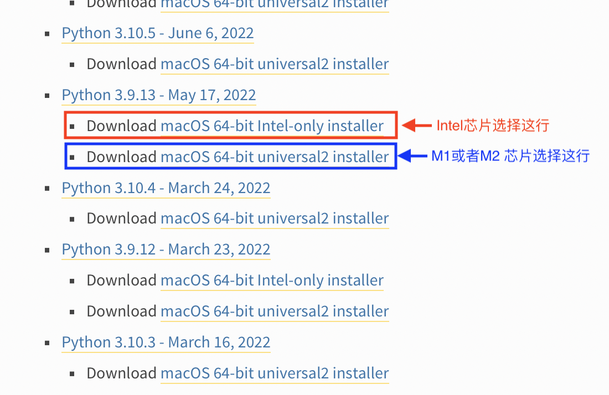
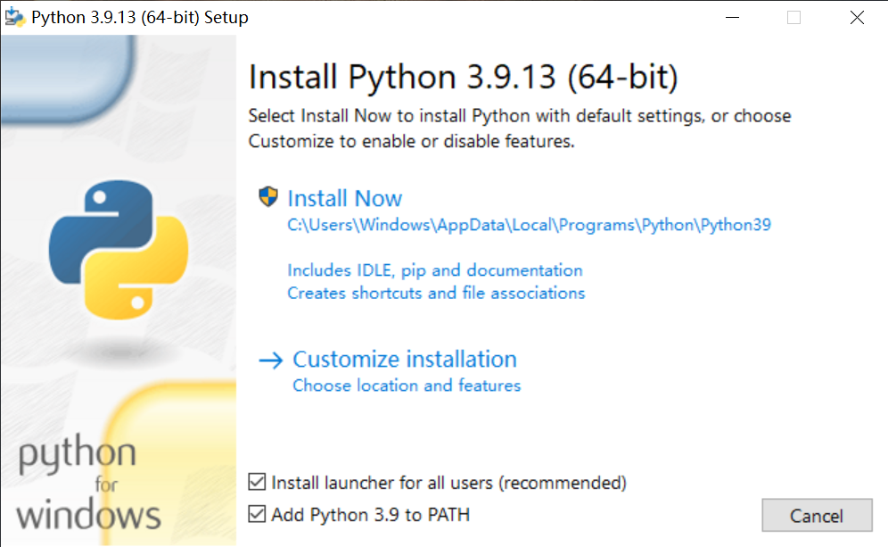

安装Python解释器#
下载和安装#
Python目前已支持所有主流操作系统，在Unix系统上自带Python环境，而在Windows系统上需要安装一下
打开官网（https://www.python.org/） ，可以看到如下菜单栏。确定电脑系统的型号，Windows系统电脑点击Windows，macOS系统的电脑点击macOS。

2.选择合适的版本和文件包进行下载。在上一步后，会看到如下图所示的界面，这里以Windows为例。

版本号一般为”X.X.X”格式，常说的Python版本3.8、3.9和3.10等， 指的是版本号的前两位,在决定好是3.X后，选择提供下载文件的最新版本。 建议选择3.8及以上的，本教程将选用3.9作为示例。
比如，3.9.16虽然是最新的版本，但并无可供下载的文件，因此继续向下寻找，找到可以下载的3.9.13，如下图所示。

根据电脑系统位数下载相应的installer即可。
installer和embeddable package安装包的区别:embeddable package是一个内嵌包，内容非常小，没有第三方库，仅仅是一个解释器。installer 是一个完整的安装包，包含运行环境、解释器、第三方库等。
接下来以macOS为例，在第一步中选择mac后，显示的界面与上述第二张图片相似，但是其页面的3.9.13版本不同，如下图所示。

根据macOS的芯片情况点击相应的版本进行下载。
安装Python。在下载完Python安装包后，双击打开。Mac版本的Python按照安装器提示，完成即可。Windows版本的版本安装要注意以下几点：

如果双击安装文件，显示如上图所示，表明系统安装过该版本的Python，点击”Repair”第二个选项，等待修复完成即可。
如果双击安装文件，显示如下图所示，表明系统是第一次安装该版本的Python，按图片内提示勾选选项，然后点击”Install Now”。

安装成功后，就会显示安装成功，如下图所示。

如果选择custom 安装有一些选项，最重要的是add path，建议安装到all users（指计算机有多个账号）。注意不要把路径放在根目录，比如D盘，需要自己给个文件夹。Python会安装文件到设置的目录为根目录。
安装完测试python解释器。Windows自带搜索栏搜索CMD或者命令提示符。输入python，返回的页面应该是XXX。exit()回车，如下图所示。
测试pip是否可用，命令栏输入pip install requests。pip如果出现网络问题，需要换清华的源，在命令行输入以下命令。
pip config set global.index-url https://pypi.tuna.tsinghua.edu.cn/simple
使用#
解释器#
>>> print("Hello,world!")
IDLE#
>>> print("Hello,world!")
pip的使用#
pip是Python的安装命令行工具。安装第三方库的命令格式为：pip install []
pip install requests
注意#
官方下载Python速度很慢，找解决方案。
IDLE可能会报错”IDLE can’t import Tkinter. Your Python may not be configured for Tk”，注意场景及解决方案。也可考虑不讲IDLE。